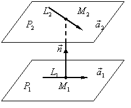

П 6.3.№20.
1. Найдите расстояние между скрещивающимися прямыми и
2. Напишите уравнения общего перпендикуляра  к прямым и
к прямым и .
.
к прямым и.Решение:
1. Уравнение плоскости  ,
проходящей через прямую
,
проходящей через прямую
,
проходящей через прямую параллельно прямой , запишем как
уравнение плоскости, проходящей через точку с
нормальным вектором
, запишем как
уравнение плоскости, проходящей через точку с
нормальным вектором 
.
Расстояние от точки ,
принадлежащей прямой , до плоскости найдем, приведя уравнение к нормальному виду:
, до плоскости найдем, приведя уравнение к нормальному виду: Эта задача может быть сформулирована как задача о нахождении
расстояния между двумя параллельными плоскостями и
 , содержащими две прямые и соответственно.
, содержащими две прямые и соответственно.
и
, содержащими две прямые и соответственно.Тогда расстояние между и
равно абсолютной величине проекции
вектора на направление вектора
и
равно абсолютной величине проекции
вектора на направление вектора Здесь
2. Рассмотрим плоскости и
, проходящие, соответственно, через
прямые и перпендикулярно
плоскости из задачи 19).
перпендикулярно
плоскости из задачи 19). Имеем: откуда
Аналогично и
Общим перпендикуляром к прямым и
является прямая , являющаяся линией пересечения
плоскостей и ,
которую можно записать общими уравнениями: 
является прямая , являющаяся линией пересечения
плоскостей и ,
которую можно записать общими уравнениями: ОТВЕТ:1. 2.